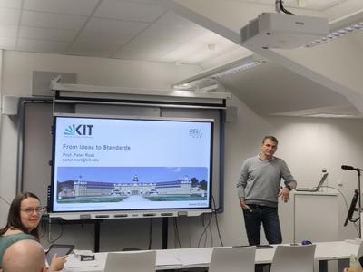
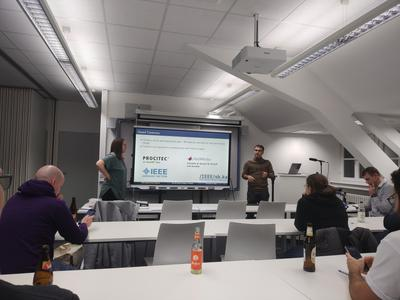

ISIC 2023: Finale und Thanksgiving Event
{kind=link}
Nach packenden drei Wochen Rätseln hat die achte Ausgabe der ISIC wieder beim traditionellen Thanksgiving Event des IEEE Studentbranch Karlsruhe einen würdigen Abschluss gefunden. Die Teams haben bis in die letzten Stunden um die Punkte für eingereichte Lösungen gestritten. In diesem Jahr haben die Teams bei der Kommunikation der Zwerge Hilfe geleistet um mehr Metalle und Edelsteine abzubauen.
In der Reihenfolge der Teams hat sich folgendes Bild ergeben: Platz 1 ging an die Binary Brigade mit 1287 Punkten, dicht gefolgt von Team Berni Bergmann mit 1070 Punkten. Mit einem hauchdünnen Vorsprung von 2 Punkten hat das Team kasita-mesago den dritten Platz vor dem Team Hamming Barbie ergattert. Die Teams kamen dabei auf insgesamt 527 und 525 Punkte. Den fünften Platz belegte das Team BandpassBitches.
{kind=link}
Im Rahmen des Thanksgiving Events hat dieses Jahr Prof. Dr.-Ing. Peter Rost einen Vortrag zum Thema "Von der Idee vom Standard". Schon während des Vortrags hat dies für viele Diskussionen Rund um das Thema Standardisierung gesorgt und welche Player von mehr Standards profitieren. Welche Schritte notwendig sind um von einer Erfindung zu einem Standard zu kommen und die benötigte Zeit, gerade im Mobilfunk, wird von Prof. Rost erläutert. Die vielen (auch konkurrierenden) Standardisierungsgremien in der Elektrotechnik kommen auch zur Sprache.
{kind=link}
Nach dem ausführlichen Fachvortrag fand die Siegerehrung der ISIC statt. Die ersten drei Teams haben verdient je ein HackRF One SDR Kit. Dies wurde dankenswerterweise von der Firma PROCITEC gesponsert. Das Gewinnerteam erhielt zusätzlich ein Raspberry Pi 4 Starter Kit. Die Preise und Geschenke der Firma Mathworks hatten leider noch Lieferverzug und werden im Nachgang an die Teilnehmer verteilt. Zusätzlich erhielt jedes Team noch entsprechende Urkunden und je einen Gutschein zur Nachbesprechung in der Gaststätte "Schwarzer Kater" in Karlsruhe.
Wir möchten uns nochmal recht herzlich bei unseren Sponsoren PROCITEC und Mathworks für die Teilnehmerpreise bedanken. Außerdem geht ein Dank an das Institut für Nachrichtentechnik (CEL) für die Räumlichkeiten und die IEEE Germany Section für die finanzielle und organisatiorische Unterstützung.